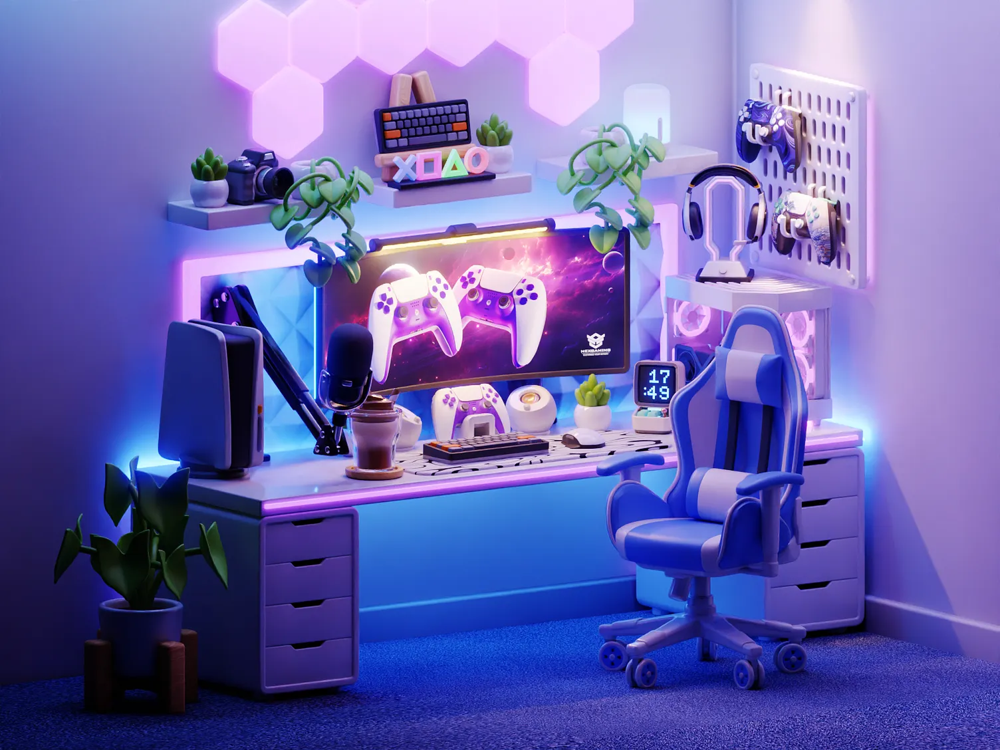
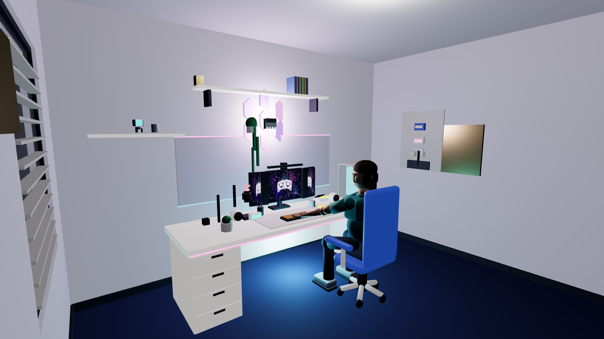
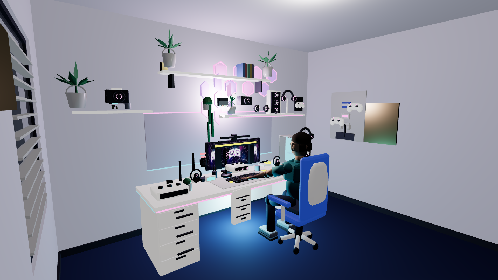
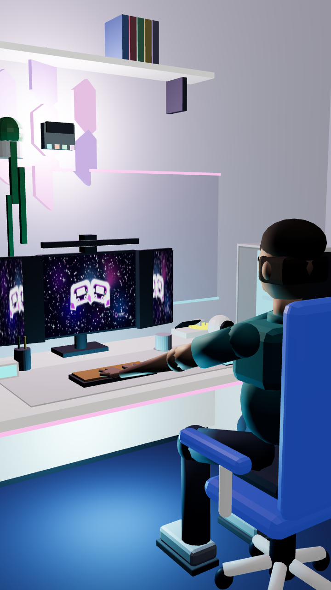
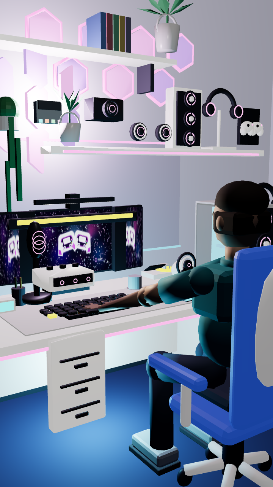

Offline evidence. Captures use the pinned R5 harness, unchanged camera profiles, 1× DPR, and matched animation state. The main reference is supplied for comparison only; no reference pixels are used in the candidate assets.
1920 × 1080 · exact desktop-home camera



720 × 1280 · exact mobile-home camera

